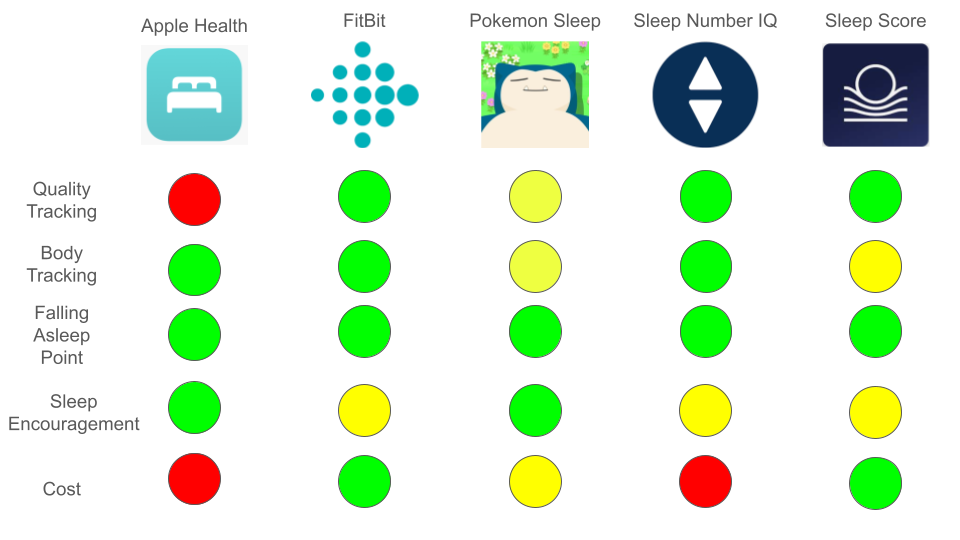

__
__
Sleepinc Problem Statement
How might we present reliable, consistent, engaging, and relevant sleep tracking for young adults who struggle to stay on top of their wellbeing?Stakeholders
Our primary stakeholders are "young adults who struggle to stay on top of their wellbeing" Many groups fall under this description, including:
- College students
- Recent graduates, learning to balance new work schedules
- Night shift workers
- New parents
Secondary stakeholders are primarily our competitors, most prominently including Apple Health, FitBit, and Sleep Number. We addressed this group in our Competitive Analysis.
Competitive Analysis
While many sleep tracker apps exist, our team found some gaps in sleep app functionality. The main three were:
- A sleep quality score
- Sleep encouragement, aside from advice
- The ability to track daytime naps
Our prototypes and app design were created with these gaps in mind, with the intention to fill them.
Low-Fi Prototypes

While we enjoyed the process of low-fi prototype design, refinement was necessary.
Hi-Fi Prototype: Team Selection Screen

As the primary designer of this screen, my intent was twofold: to give the user motivation to consistently track sleep, and to tailor the user's experience to their specific sleep habits.
There are four teams available for the user to select:
- Team Sunrise, for those who enjoy waking up early.
- Team Aquatic, for those with sporadic sleep schedules.
- Team Hibernate, for those who sleep for long periods of time and take naps often.
- Team Nocturnal, for those who stay up late frequently and nap during the day.
When a user selects one of these teams, the app provides them targeted advice and motivaton to track sleep.
Users can compare the quality of their sleep habits to those registered with the same team as them, providing a sense of community and accomplishment when positive habits are maintained.
Testing, Feedback and Reflection
During user testing, there was an overall positive response to the team selection aspect. Users enjoyed the process of considering their sleep habits and having input on their experience with the app.
In the future, I believe that emphasizing the community-building piece of this software could lead to better user experiences. Perhaps adding team forums or challenges could keep users entertained, thus preventing dropoffs in tracking.
__
__